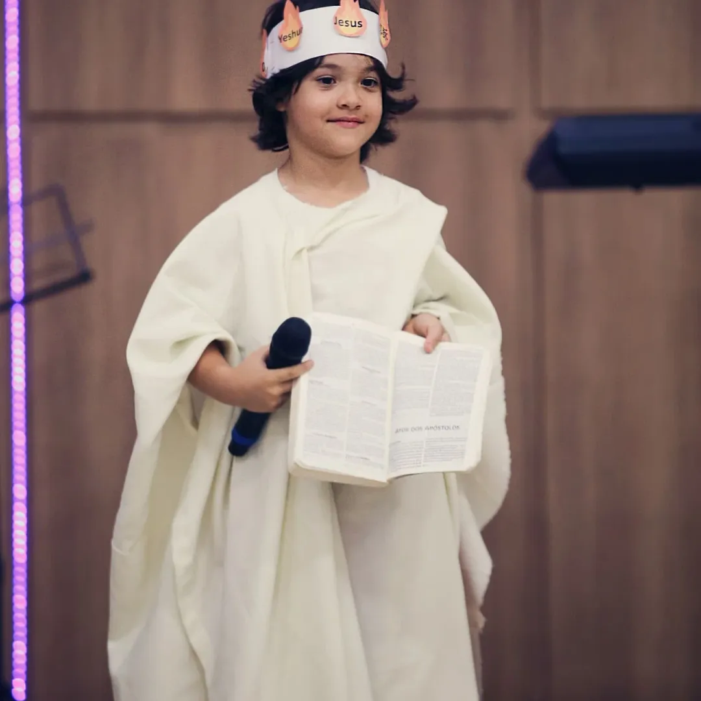
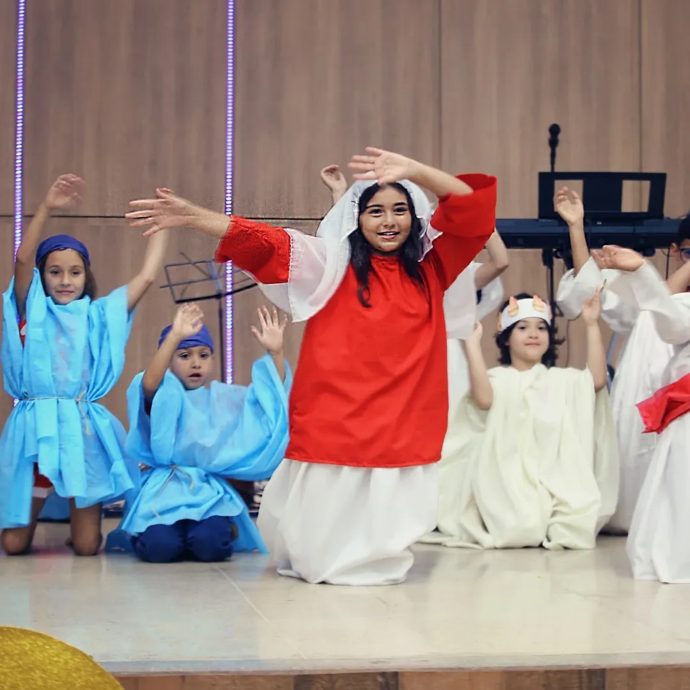

Onde as crianças aprendem que são amadas por Deus — de um jeito divertido, seguro e cheio de vida.

O Ministério Kids existe para apresentar Jesus às crianças de 0 a 11 anos de uma forma que faça sentido para cada fase da vida. Acreditamos que a infância é o tempo mais precioso para a semeadura da Palavra de Deus.
Cada domingo é uma aventura cuidadosamente planejada, com dinâmicas, histórias bíblicas, músicas e atividades criativas que ajudam os pequenos a conhecer e amar a Deus do jeito deles.
Ambiente seguro, acolhedor e supervisionado por educadores treinados e comprometidos.
Histórias bíblicas contadas de forma criativa, relevante e divertida para cada faixa etária.
Arte, música, teatro e jogos são nossas ferramentas para tornar a fé uma experiência real.
Cada criança é vista, valorizada e cuidada com dedicação por toda a nossa equipe.
Aulas dinâmicas e interativas todo domingo pela manhã, com louvor infantil, contação de histórias e atividades temáticas.
Encenações criativas das histórias da Bíblia — as crianças são os protagonistas e aprendem enquanto se divertem.
Momentos de adoração infantil com músicas animadas que ensinam sobre Deus de forma leve e contagiante.
Retiro anual repleto de atividades, momentos de oração e experiências espirituais marcantes para os pequenos.
Uma vez por mês as crianças ficam com os pais no culto principal, celebrando juntos como família de Deus.
Natal, Páscoa e outras datas são celebradas com programações especiais pensadas com carinho para as crianças.

Seja como voluntário educador ou trazendo seus filhos para participar — há um lugar especial para você e sua família no Ministério Kids.
Quer saber mais sobre o ministério, se voluntariar ou trazer seus filhos? Nossa equipe está pronta para acolher você com alegria.
Orizona – GO, Brasil Central
contato@igrejadecristo.com.br